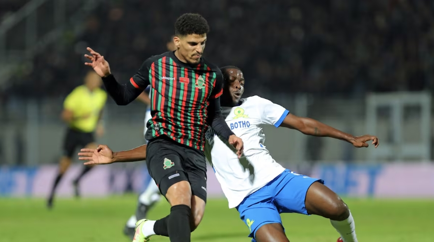

publié le: 18/01/2025
Sundowns-AS FAR: un sommet aux enjeux multiples

Les deux leaders du groupe B s’affrontent, dimanche 19 janvier (17 h), pour le compte de la dernière journée, en phase de groupe de la Ligue des champions. Une rencontre décisive qui promet d’être riche en intensité.
Le choc entre l’AS FAR et Mamelodi Sundowns en Ligue des champions africaine est l’un des sommets les plus attendus cette saison. La rencontre, qui se joue au stade du Loftus Versfeld à Pretoria, promet une lutte intense et une issue cruciale pour le groupe B.
Pour les FAR, les enjeux ne manquent pas
Arrivés à l’aéroport de Johannesburg, le 17 janvier au matin, les coéquipiers d’Amine Zahzouh ont rallié par la suite Pretoria, pour y affronter les Sundowns.
Qualifiés à l’issue du choc face à l’autre représentant marocain, le Raja Casablanca, le 11 janvier dernier, les FAR veulent mettre toutes les chances de leur côté, pour décrocher au moins un nul, leur permettant de conserver leur place de leader de la poule (9 points après 5 journées). Gagner cette affiche de la 6e journée représente énormément pour les militaires.
En plus de s’adjuger la première place, les hommes d’Hubert Vélud enverraient un message à tout le continent, en disposant de l’un des favoris au titre africain pour cette édition 2025.
Mais ce ne sera pas facile, face aux Sundowns, qui comptent un total de 58 victoires à domicile, sur 80 matchs joués en Ligue des champions africaine. En Championnat sud-africain, ils comptent 100% des victoires sur leur propre terrain cette saison.
Quarante ans après leur unique sacre en Ligue des champions (1985), les R’batis vont donc s’attaquer à un gros morceau, en tentant de briser la domination des «Masandawana» sur leur pelouse.
Le club militaire devra néanmoins se passer des services de son défenseur, Hatim Essaouabi, blessé à la cuisse gauche lors de la rencontre contre le Raja de Casablanca. Le coach, Hubert Valud, ne s’est également pas déplacé, après son opération suite à une rupture du tendon d’achille.
Les Sundowns font appel à leurs supporters
De l’autre côté, le club Sud-Africain, deuxième au classement avec 8 unités, appelle à une présence massive des supporters, pour tenter de décrocher une victoire cruciale pour la qualification.
Champions d’Afrique en 2016, les Sud-Africains ne sont toujours pas sûrs de passer outre les phases de groupes. Conscients de l’enjeu, les «Brazilians» vont, sans aucun doute, profiter de l’avantage du terrain, pour décrocher le seul billet qualificatif, encore en jeu.